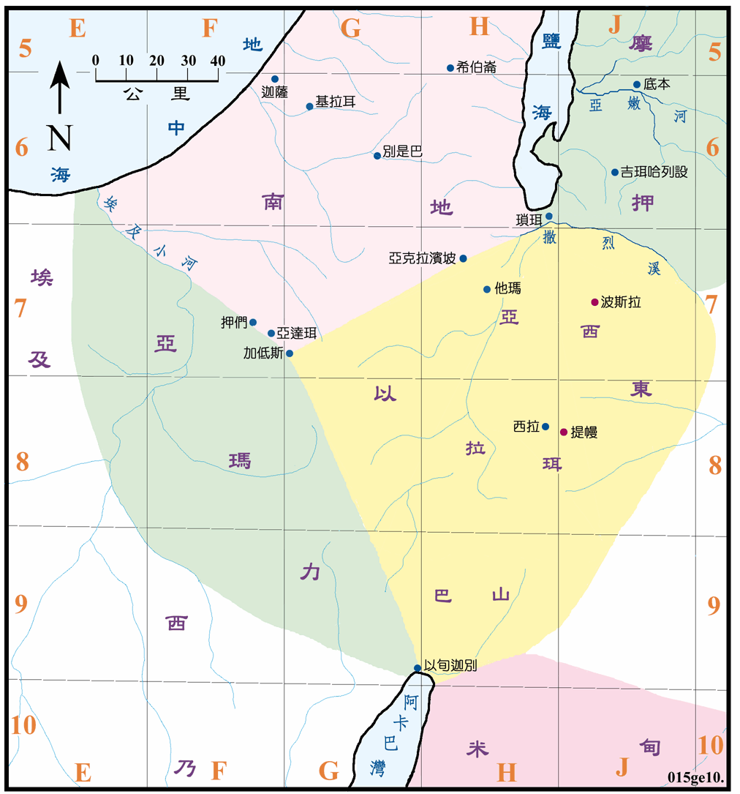

2006～1909BC

行动线说明
| 圣经 | 说明 |
|---|---|
| 创25:25 | 以扫出生。 |
| 创27章 | 以扫被雅各骗去父亲对长子的祝福。 |
| 创33:1-16 | 以扫从西珥来和雅各相会。(参看创图09) |
| 创36章 | 以东的历史。 |
2006BC 以扫出生，1909BC 以后移往西珥山里，将原来住在那里的何利人逐出，改名为以东。以东地位於亚拉巴谷的两侧，在东边的是西珥山区，北起自撒烈溪，南与米甸交界 (米甸是亚伯拉罕的庶子)，东为沙漠。西侧则呈一三角形，西边的尖端在加低斯，西北与南地为邻，西南与亚玛力人为邻。以东很早就有王国的组织，他们虽然与以色列人是兄弟，但长期与以色列人为敌，他们后来称为以土买人。
以扫的孙子亚玛力，他占据了原亚玛力人之地，日后的亚玛力人可能是他们与原地的人种混合而成。他们主要的集中地可能是在以东和埃及小河之西，一片略似菱形的山地，他们也经常在南地出现。